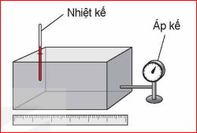
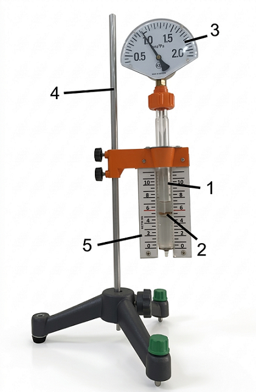

I. CÁC THÔNG SỐ TRẠNG THÁI CỦA MỘT LƯỢNG KHÍ
Một lượng khí đựng trong một bình kín được xác định bởi bốn đại lượng là khối lượng \( (m) \), thể tích \( (V) \), nhiệt độ \( (T) \) và áp suất \( (p) \).
Khi thể tích, nhiệt độ và áp suất của một khối lượng khí xác định không thay đổi, ta nói lượng khí ở trạng thái cân bằng. Thể tích, áp suất và nhiệt độ của lượng khí được gọi là các thông số trạng thái của nó.
Câu hỏi 1: Người ta dùng các dụng cụ nào để đo, xác định các thông số trạng thái của lượng khí trong hộp kín (nhiệt kế, áp kế)?

Dùng nhiệt kế để đo nhiệt độ và áp kế để đo áp suất của lượng khí. Thể tích có thể xác định qua kích thước hình học của bình chứa.
Câu hỏi 2: Nêu tên đơn vị của các đại lượng này trong hệ SI.
- Áp suất: Pascal \( (Pa) \).
- Nhiệt độ: Kelvin \( (K) \).
II. ĐỊNH LUẬT BOYLE
1. Quá trình đẳng nhiệt
Quá trình biến đổi trạng thái của một khối lượng khí xác định khi nhiệt độ giữ không đổi được gọi là quá trình đẳng nhiệt.
2. Thí nghiệm
Chuẩn bị:
- Xi lanh trong suốt có chia độ (1).
- Pit-tông có ống nối (2).
- Áp kế (3).
- Giá đỡ (4) và thước đo (5).

Tiến hành:
- Bố trí thí nghiệm như hình vẽ.
- Dịch chuyển từ từ pit-tông để thay đổi thể tích.
- Đọc và ghi kết quả \( p \) và \( V \).
Bảng kết quả thí nghiệm mẫu
| Lần TN | \( V (cm^3) \) | \( p (10^5 Pa) \) | Tích \( p \cdot V \) |
|---|---|---|---|
| 1 | 3,0 | 1,0 | 3,0 |
| 2 | 2,5 | 1,2 | 3,0 |
| 3 | 2,0 | 1,5 | 3,0 |
| 4 | 1,5 | 1,9 | ~2,85 |
3. Định luật Boyle
Hệ tọa độ (p,V)
Hệ tọa độ (V,T)
Hệ tọa độ (p,T)
III. CỦNG CỐ
Bài tập ví dụ
Một lượng khí có thể tích 10 lít ở áp suất \( 10^5 Pa \). Tính thể tích của lượng khí này ở áp suất \( 1,25 \cdot 10^5 Pa \). Biết nhiệt độ không đổi.
Bước 1: Xác định đẳng quá trình: Đẳng nhiệt.
Bước 2: Tóm tắt trạng thái:
TT1: \( p_1 = 10^5 Pa; V_1 = 10 L \)
TT2: \( p_2 = 1,25 \cdot 10^5 Pa; V_2 = ? \)
Bước 3: Áp dụng ĐL Boyle:
\( p_1V_1 = p_2V_2 \Rightarrow V_2 = \frac{p_1V_1}{p_2} = \frac{10^5 \cdot 10}{1,25 \cdot 10^5} = 8 \text{ lít} \).
Bài tập vận dụng
Bài 1: Một quả bóng chứa \( 0,04 m^3 \) không khí ở áp suất 120 kPa. Tính áp suất khi giảm thể tích còn \( 0,025 m^3 \).
Bài 2: Một bọt khí nổi từ đáy giếng sâu 6m lên mặt nước. Thể tích tăng bao nhiêu lần? (Cho \( p_0 = 1,013 \cdot 10^5 Pa, \rho = 1000 kg/m^3 \)).
Áp suất mặt nước: \( p_2 = p_0 = 1,013 \cdot 10^5 Pa \).
Tỉ số thể tích: \( \frac{V_2}{V_1} = \frac{p_1}{p_2} = \frac{1,601}{1,013} \approx 1,58 \text{ lần} \).
EM ĐÃ HỌC
- Thông số trạng thái: p, V, T.
- Định luật Boyle: \( pV = \text{const} \).
EM CÓ THỂ
Giải thích các hiện tượng thực tế như hít thở, hoạt động của ống tiêm, bọt khí nổi dưới nước...